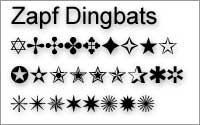
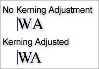
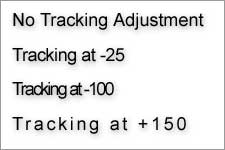
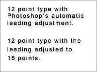

Home: Week 1 : Typography Terminology.
Typography Terminology.
If you peruse any of the links under "Get Your Font On", you will find a bevy of typographical terms. We will not have time to investigate type that thoroughly. However, that doesn't mean you shouldn't click on one of those links and look around.
We will learn some basic type terms, "Enough to get around," as they say. By the end of this discussion you should be able to:
- Determine if a typeface is Roman or Gothic, Serif or Sans-Serif.
- Know what a "dingbat" is used for. (No jokes about my mother please.)
- Adjust the kerning, tracking, and leading of type in Adobe Photoshop and Adobe Illustrator
Describing Type
What's the little thing that sticks out of the top?
- Typeface/Font
- The terms typeface and font have become almost interchangeable, although "font" is used more often, "typeface" is more correct. In the olden days prior to digital type, a font was a subset of a typeface. For example, Helvetica is a typeface, whereas Helvetica Italic would be a font. A typeface or font can be thought of as a "letter design." Here is a short list of typefaces you may know.
Algerian, Aria, Bookman, Braggadocio, Britannic, Brush Script, Century Gothic, Century Schoolbook, Colonna, Courier, Desdemona, Dingbats, Footlight, Futura, Helvetica, Impact, Kino, Lucida, MS Icons, MS LineDraw, Matura, Modern, NewCentury Schoolbook, Palatino, Playbill; Symbol, Times New Roman, Wide Latin, ZapfChancery, ZapfDingbats; Wingdings; Tahoma, Verdana
- Roman/Serif
- Roman or Serif style fonts have thin "wedges" at the ends of letters. Serif fonts imply tradition and history. Think of the letter forms carved into marble on Roman architecture. Serif fonts tend to be easier to read in print, easier to read in large amounts, and more difficult to read on a computer monitor.
- Gothic/Sans-Serif
- Gothic of Sans-Serif style fonts lack the thin "wedges" of serif fonts. Sans-Serif fonts imply modernity. Think of the type over the entrance of the Guggenheim Museum in New York. Sans-Serif fonts are often used in signage, like the signs you see on the interstate highways. Sans-serif fonts work well as headlines on newspapers or posters. Sans-Serif fonts can be difficult to read in large amounts in print. On a computer monitor, most sans-Serif fonts are much easier to read than serif fonts.
- Italic/Oblique
- Italic and Oblique refer to slanted versions of a typeface. Technically an Italic font should be cursive and slanted, while an oblique font should be straight and slanted. These terms are often used interchangeably. Italics are used to show emphasis on a particular word or phrase in a block of text.
- Bold
- Bold type appears darker, thicker, and heavier than normal type. Bold type is used for showing emphasis, or for showing separation of content. Headlines are often bolded to differentiate them from the rest of the page.
- Black
-
 Think of black as "very very bold type." Some fonts will have both a bold and a black version.
Think of black as "very very bold type." Some fonts will have both a bold and a black version.
- Dingbats
-

An iconic character glyph, such as a star, a flower, a little square box. There are special iconic fonts, such as Zapf Dingbats and Wingdings, which contain these ornamental characters instead of letters.
Working With Type
The following are terms that any blossoming, anal retentive typographer should know.
- Kerning
-

Kerning, or pair kerning refers to an adjustment of how tightly or loosely letter pairs are typeset. Without kerning adjustments, some pairs of letters would appear to have too much space between them. Proper kerning makes type easier to read by eliminating distracting whitespace in between letters. Most contemporary fonts have kerning adjustments built in.
- Tracking
-

Tracking is similar to kerning, except that tracking applies to blocks of copy, not individual pairs of letters. Adjusting the tracking a line in a paragraph will adjust the overall "tightness" of that line of text. Small tracking adjustments are often made to make a lot of text fit into a smaller space. Increased tracking is used to give type more "air," making the overall apperence of the type appear lighter.
- Leading
-

Leading refers to the amount of space between lines of type. When type was set by hand, thin strips of lead were placed in between the rows of letters. We now call that spacing "leading." Adjusting leading will adjust the horizontal spacing of type. Increasing leading increases the space between the lines, leaving more room to read between.